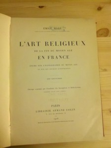

Books! At Aoristic we enjoy our books, we actually own quite a shit load of them. But something is special about the title page of a book. A mix of form and function the title page conveys the necessary bibliographic information but how it does so is left to the designer or typesetter, depending on what century you are in. The title page has gone through quite the evolution over the years. This change has partly to due to changes in technology as well a shift in aesthetics. While once serving as the first things a reader sees, the early title pages of manuscripts were were exorbitantly ornate. Entering the age of movable type we often see the illustrations and data separated into a title page and its verso, the frontispiece. Volumes could be written about typography demonstrated but it seems pretty simple, the important stuff is big.
{kind=link}
The title pages we like most, and appear on our shirts, are mostly from the late 19th and early 20th century. In these title pages you’ll notice the author’s name is often inconspicuously small. As opposed to what we see today  with gargantuan letters of the author name popping off the page. This shift may be related to change in the idea of authorship during the 20th century. Our individualistic society praises successful authors and their name becomes a stamp of approval as seen on the cover of any novel of a mega author. But literary critics such as Michel Foucault question the role of the author and what he calls the “author function” in his 1969 essay “What is an author?”. Is the author a product of the work and a piece of that structure or placed outside work as a over arching unifier of the books? It maybe interesting to examine the changes in the title pages over time to see if it truly reflects our collective views of authorship.
with gargantuan letters of the author name popping off the page. This shift may be related to change in the idea of authorship during the 20th century. Our individualistic society praises successful authors and their name becomes a stamp of approval as seen on the cover of any novel of a mega author. But literary critics such as Michel Foucault question the role of the author and what he calls the “author function” in his 1969 essay “What is an author?”. Is the author a product of the work and a piece of that structure or placed outside work as a over arching unifier of the books? It maybe interesting to examine the changes in the title pages over time to see if it truly reflects our collective views of authorship.
One final quality of the title page that we really love and why we put them on a shirt is the powerful indexical nature they posses. The title page represents a whole host possible interpretations. It represents not just the physical book it’s apart of but also the author, the subject, the concepts the book represents, the values the book/author represent, etc. So check out our book tees at our Etsy store and revel in the typographical beauty.
{kind=link}